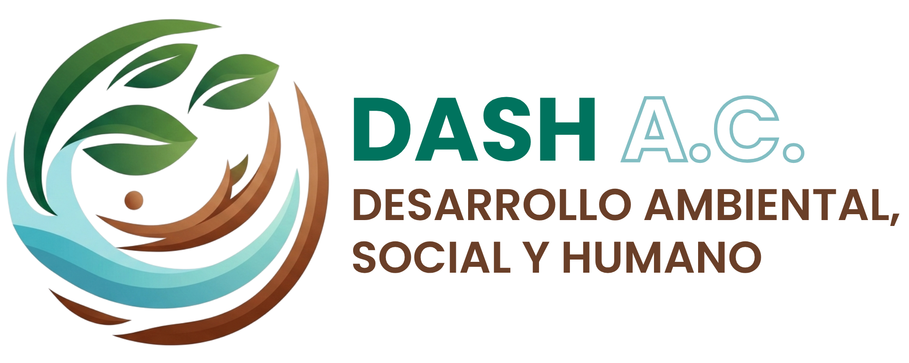

DASH MÉXICO

Proyectos diseñados para transformar realidades concretas, conectando el propósito de tu organización con las necesidades de nuestra comunidad y entorno.
Capacidad legal para emitir comprobantes fiscales deducibles de impuestos por cada aportación.
Alineamos tu estrategia de comunicación con acciones reales que fortalecen la reputación institucional.
Generamos indicadores claros y reportes de resultados para tus estrategias de Sostenibilidad.
Programas de impacto diseñados para generar valor compartido.
"Sembramos conciencia en las generaciones que liderarán el mañana."
"Reconectando a la comunidad con su entorno natural."
"Sostenibilidad que nace desde el corazón de la organización."
"Resiliencia y soberanía para quienes más lo necesitan."
Imagina un salón de clases donde el entorno natural es el principal maestro. A través de este programa, convertimos escuelas vulnerables en espacios vivos. Creamos materiales educativos personalizados e inspiramos a la niñez a convertirse en guardianes activos de su entorno. Ya sea transformando muros grises en murales llenos de color o dotando de kits escolares sostenibles, forjamos una conexión profunda entre las infancias y la tierra que habitan.
Creemos que el espacio público debe ser un refugio para la vida. Nuestras iniciativas invitan a empresas y ciudadanos a ensuciarse las manos para sembrar esperanza. Desde jornadas de reforestación comunitaria con especies nativas hasta la creación de jardines polinizadores que devuelven el color a las calles. Transformamos camellones y parques olvidados en senderos interpretativos donde cada planta cuenta una historia.
La verdadera sostenibilidad comienza desde adentro. Diseñamos experiencias memorables donde los colaboradores y sus familias se reconectan con la naturaleza. A través de encuentros de integración al aire libre, dinámicas de arte ambiental y la instalación de huertos orgánicos directamente en los espacios de trabajo, logramos transformar la cultura organizacional, fomentando la salud mental y el orgullo de pertenencia.
El acceso al agua limpia y a la alimentación digna es la base de la dignidad humana. Con este programa, intervenimos en comunidades e instituciones educativas que enfrentan escasez hídrica, instalando sistemas de captación de agua de lluvia y ecotecnias accesibles. Acompañamos esta infraestructura con la creación de huertos escolares y educación nutricional, sembrando resiliencia comunitaria.
Iniciativas listas para generar impacto inmediato.
Objetivo: Fomentar el vínculo entre la niñez y el medio ambiente mediante un cuaderno educativo personalizado.
Alcance: Entrega de cuadernos ilustrados con retos ambientales, nombre personalizado y logos institucionales.
Objetivo: Transformar simbólicamente espacios escolares para mejorar la autoestima del alumnado.
Alcance: Intervención estética con murales, jardines motivacionales y señalética con valores.
Objetivo: Dotar a niñas y niños de kits escolares sostenibles, promoviendo la equidad educativa.
Alcance: Entrega de mochilas ecológicas con útiles y actividades educativas.
Objetivo: Fomentar la responsabilidad ambiental mediante la adopción simbólica de áreas verdes.
Alcance: Entrega de placas, carnets y tareas de cuidado ambiental escolar.
Objetivo: Promover la soberanía alimentaria en edad escolar.
Alcance: Instalación de huertos escolares con talleres de nutrición y cocina saludable.
Objetivo: Visibilizar causas socioambientales a través del arte infantil y juvenil.
Alcance: Concurso en escuelas, exposición pública y evento de premiación institucional.
Objetivo: Fomentar hábitos sostenibles en el hogar mediante recursos prácticos.
Alcance: Entrega de kits con bolsas reutilizables, semillas y guías prácticas mediante QR.
Objetivo: Fortalecer el vínculo empresa-familia a través de expresiones artísticas ambientales.
Alcance: Concurso de dibujo y fotografía entre familias, premiación y exposición corporativa.
Objetivo: Fomentar la salud mental de los colaboradores mediante conexión con la naturaleza.
Alcance: Diseño e instalación de huerto urbano institucional como espacio de bienestar permanente.
Objetivo: Recuperar áreas degradadas con especies nativas y participación ciudadana activa.
Alcance: Planeación técnica, jornada de plantación profesional y seguimiento de sobrevivencia.
Objetivo: Atender la escasez hídrica con infraestructura de ecotecnia básica.
Alcance: Instalación de sistemas de captación pluvial y capacitación técnica a la comunidad escolar.
Objetivo: Promover la educación ambiental en parques públicos mediante señalética científica.
Alcance: Diseño de contenido y señalética sobre biodiversidad y servicios ecosistémicos.
Diseñemos juntos un programa de impacto a la medida de tus objetivos.
Quiero ser aliado DASH